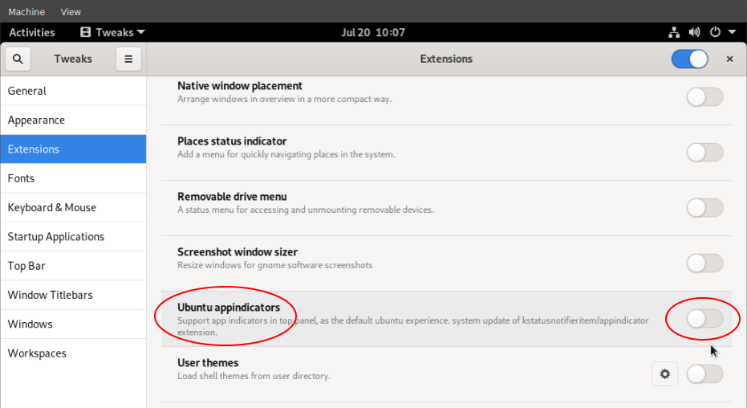
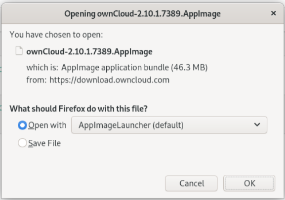
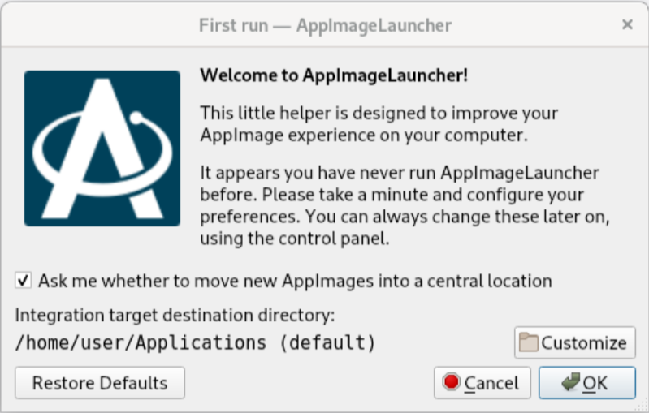
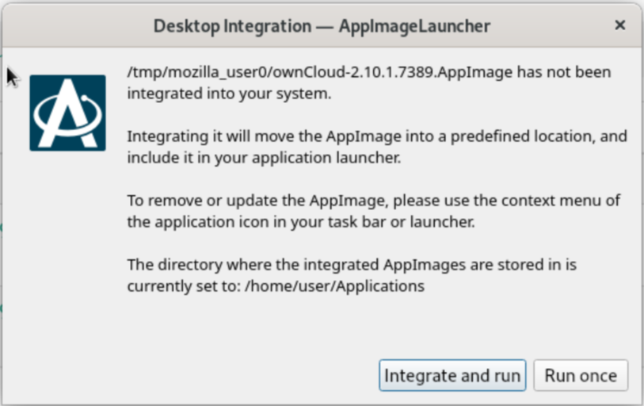
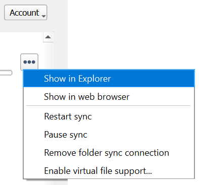
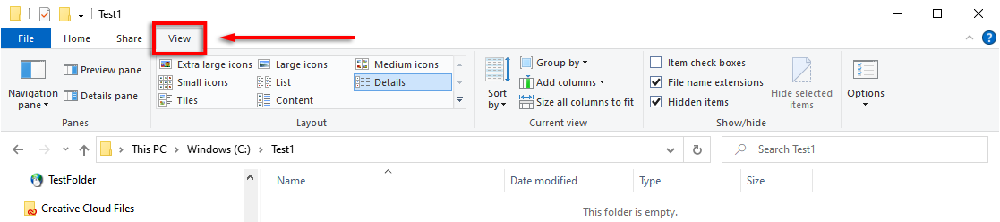
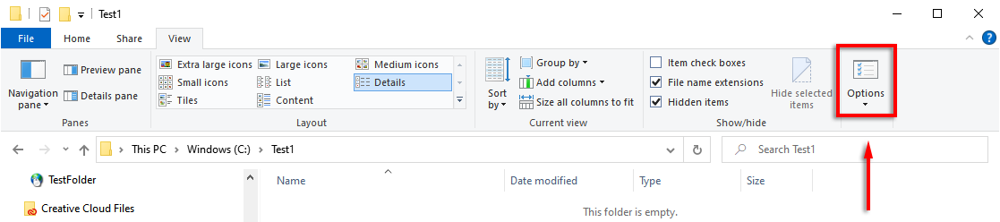
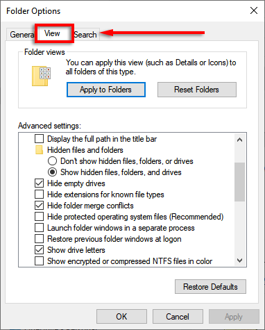
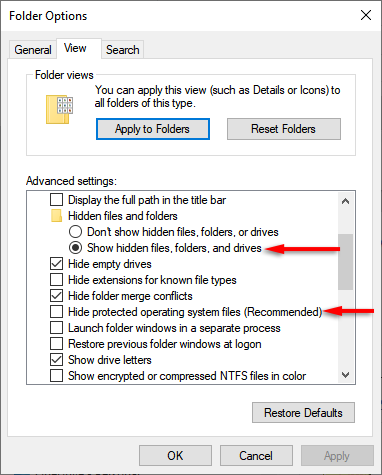

Installing the Desktop App
Introduction
The Desktop App enables users to access and sync files and folders from their ownCloud, work on remote files right from the desktop as if they were stored on their computer – because they are. Continuous synchronization to and from the ownCloud server provides ease of use combined with comprehensive access control.
System Requirements and Installation
You can download the latest version of the ownCloud Desktop App from the Desktop App Download page. There are Desktop Apps for Linux, macOS, and Microsoft Windows available. When using Linux, you can also use AppImage.
System Requirements
Depending on the operating system used, some minimum system requirements need to be met. ownCloud provides Linux packages for a variety of Linux distributions, see the list of supported distros below.
| OS | Version |
|---|---|
Windows |
When using external drives storing the synchronization data, NTFS is required. Also see the VFS support documentation.
|
macOS |
|
Linux |
|
| For Linux distributions, we support, if technically feasible, the latest 2 versions per platform and the previous Ubuntu LTS. |
Configuration Files
Regardless of the type of physical installation, a configuration file will be created when the app is started for the first time. The location of the configuration file is described in the Configuration File documentation.
-
When deleting an existing configuration file, no data synced locally will be deleted, but the app will start the Installation Wizard and you have to configure again.
-
On Linux, when changing the deployment method like from native to AppImage, you can reuse an existing configuration file without changes.
-
If you want to deploy from scratch again, you can safely delete the configuration file if one exists. In such a case, check for existing sync folders which may need to be deleted too.
Installation on macOS and Windows
Installation on macOS and Windows is the same as for any software application: download the installer, double-click it to launch the installation and follow the installation wizard. After it is installed and configured, the Desktop App will automatically keep itself updated if not manually disabled which you can change when using Windows. For more information about this setting see the Disabling Automatic Updates section.
For Windows, see the Customizing the Windows Installation section describing installer configuration options.
Installation on Linux
-
No matter whether the Desktop App is installed natively or used as an AppImage, you can add command line parameters when starting up post installation. One parameter to mention is the option
-s. This option forces the settings page to be shown on startup. While not necessary during general usage, it can be helpful if system tray icons are not available any more within your desktop environment. -
Linux users should also have a password manager enabled, such as GNOME Keyring or KWallet, so that the Desktop App can log in automatically.
-
Note, our description focuses on the GNOME desktop. Adapt the procedures for other desktop environments accordingly.
-
Using GNOME on recent distributions like Ubuntu 22.04, Debian 11 or others, the system tray is typically no longer available. This makes it hard to get back an app that has been minimized to the system tray. You have to install an extension in order to restore the system tray in this case in order to be able to find and restore the minimized application.
-
For distributions like Ubuntu 22.04 or Debian 11, use the command below to install the extension:
sudo apt install gnome-shell-extension-appindicator -
On distributions based on Red Hat Enterprise Linux (including AlmaLinux and Rocky Linux), you first need to install another package:
sudo dnf install epel-releaseThen, proceed with the following command. On Fedora, it is sufficient to just run the following command:
sudo dnf install gnome-extensions-app gnome-shell-extension-appindicator -
For all other distributions, follow the AppIndicator Support installation documentation.
-
-
When the extension is installed, you need to log off and re-login to activate the changes. For this particular system tray icon extension, the name shown of the extension may depend and can be like Ubuntu AppIndicators or AppIndicator and KStatusNotifierItem Support. Once enabled, the system tray is shown again within the desktop environment.

Native Installation
Linux users must follow the instructions on the download page to add the appropriate repository for their Linux distribution, install the signing key and use their package managers to install the Desktop App. Linux users will also update their Desktop App via package manager. The Desktop App will display a notification when an update is available. Note to see Installing Shell Integration Packages. Overlay icons and a special context menu for your file browsers need to be installed manually.
You will also find links to source code archives and older versions on the download page.
On Debian-based systems, it may happen after a while that when running sudo apt update, a notice about a signature verification error is returned. This can be solved by refreshing the keys. On Debian invoke the following command to update all signatures:
sudo apt-key adv --refresh-keys --keyserver keyring.debian.orgFor Ubuntu, use:
sudo apt-key adv --refresh-keys --keyserver keyserver.ubuntu.comAppImage
An AppImage build of the ownCloud Desktop App is available to support more Linux platforms. You can download the AppImage at the Linux section of the Download Desktop App page.
AppImage is an alternative way to use Linux applications — instead of having multiple files in several places making up a package, the entire application is contained in a single file ending with an .AppImage suffix, including all necessary dependencies and libraries. ownCloud provides a single AppImage based on CentOS 7, which runs on all modern and most older Linux platforms.
- Known limitations for the 4.x AppImages
-
-
For Ubuntu 22.04, Debian 11 and other very recent distributions, you need to install
libfuse2as a prerequisite. For details see issue withlibfuseon Ubuntu >=22.04 or Debian 11 Setting up FUSE 2.x alongside of FUSE 3.x on recent Ubuntu (>=22.04). -
Shell integration packages, which means overlay icons and a special context menu for your file browsers, is not included in the AppImage. You need to install them manually, see Installing Shell Integration Packages.
-
- Installing libfuse2 if required
-
Check if
libfuse2is already installed:dpkg -l libfuse2 -
Check if there is an installation candidate for
libfuse2:sudo apt-cache show libfuse2 -
Install
libfuse2:sudo apt install libfuse2
- Install the AppImageLauncher app
-
See the Install AppImageLauncher wiki for details about installing it. AppImageLauncher does not need to be started. It hooks in when you start an AppImage. There are different responses when starting an AppImage:
- How to launch an AppImage
-
When you open an AppImage file via your file browser that you have not opened before then double click on it:

- First time usage
-
After opening an AppImage, if AppImageLauncher has been started for the first time, it will ask you to define some basic settings:

- AppImage Integration Question
-
Post first time configuration or when you open the AppImage file via your file browser, for example by double clicking on it:

- Install and run the Desktop App AppImage
-
The example below uses the terminal but you can also use the GUI. For details see How to run an AppImage.
-
Go to the download page and download the recent AppImage into the Applications folder in your home directory. Replace the URL from the example with the actual URL from the download page. Note the folder name
Applicationscan be any name and helps to collect all AppImages you have on one location. The AppImageLauncher, if used, has this name predefined unless you change it.mkdir -p ~/Applicationscd ~/Applicationswget https://download.owncloud.com/desktop/ownCloud/stable/5.3/linux-appimage/ownCloud-5.3.2.15463-x86_64.AppImage -
The following steps are only necessary when the AppImageLauncher is not used:
-
Make the AppImage executable:
sudo chmod +x ownCloud-5.3.2.15463-x86_64.AppImage
-
-
Start the AppImage by invoking the following command:
~/Applications/ownCloud-5.3.2.15463-x86_64.AppImage -
Note when you start the AppImage after setting it to be executable, AppImageLauncher will open if installed.
-
- Automatically updating the AppImage
-
For automatically updating the AppImage see the Automatic Updating of the Desktop App - Linux documentation.
Installing Shell Integration Packages
ownCloud supports installing shell integration packages, which allow you to add overlay icons and a special context menu for your file browsers, via a bash script guided installation for Linux based systems. This script covers main systems and file browsers, but by nature not all possible flavours and combinations. Beside an auto mode, you can also manually define parameters from a list. The following quick command installing the extensions requires curl to be available on your system:
curl -s https://raw.githubusercontent.com/owncloud/client-desktop-install-shell-integration/main/install-extensions.sh | bash -s - --autoIf curl is not available or you are not sure or want to read more, see Install ownCloud Linux Shell Extensions for more details.
Customizing the Windows Installation
If you just want to install the ownCloud Desktop App on your local system, you can simply download and launch the relevant .msi file and configure it in the wizard that pops up. For the examples below, the x64 installer is used.
Microsoft GPO (Group Policy Object) Installer
ownCloud provides two versions of the Microsoft Installer:
-
*.x64.msi: This is the installer for regular users. The installer UI has multiple translations to guide end users through the install procedure. -
*.x64.GPO.msi: The GPO installer works better for automated deployments in managed environments. It is only available in English. The desktop client itself comes with all the usual languages for the user interface.
Features
The MSI installer provides several features that can be installed or removed individually, which you can also control via command-line, if you are automating the installation, then run the following command:
msiexec /passive /i ownCloud-5.3.2.15463.x64.msiThe command will install the ownCloud Desktop App into the default location with the default features enabled. If you want to disable, e.g., desktop shortcut icons you can simply change the above command to the following:
msiexec /passive /i ownCloud-5.3.2.15463.x64.msi REMOVE=DesktopShortcutSee the following table for a list of available features:
| Feature | Enabled by default | Description | Property to disable. |
|---|---|---|---|
Client |
Yes, |
The actual client |
|
DesktopShortcut |
Yes |
Adds a shortcut to the desktop. |
|
StartMenuShortcuts |
Yes |
Adds shortcuts to the start menu. |
|
ShellExtensions |
Yes |
Adds Explorer integration |
|
Installation
You can also choose to only install the Desktop App itself by using the following command:
msiexec /passive /i ownCloud-5.3.2.15463.x64.msi ADDDEFAULT=ClientIf you for instance want to install everything but the DesktopShortcut and the ShellExtensions feature, you have two possibilities:
-
You explicitly name all the features you actually want to install (whitelist) where
Clientis always installed anyway.
msiexec /passive /i ownCloud-5.3.2.15463.x64.msi ADDDEFAULT=StartMenuShortcuts-
You pass the
NO_DESKTOP_SHORTCUTandNO_SHELL_EXTENSIONSproperties.
msiexec /passive /i ownCloud-5.3.2.15463.x64.msi NO_DESKTOP_SHORTCUT="1"
NO_SHELL_EXTENSIONS="1"| The ownCloud .msi file remembers these properties, so you don’t need to specify them on upgrades. |
| You cannot use these to change the installed features, if you want to do that, see the next section. |
Changing Installed Features
You can change the installed features later by using REMOVE and ADDDEFAULT properties.
-
If you want to add the desktop shortcut later, run the following command:
msiexec /passive /i ownCloud-5.3.2.15463.x64.msi ADDDEFAULT="DesktopShortcut"-
If you want to remove it, simply run the following command:
msiexec /passive /i ownCloud-5.3.2.15463.x64.msi REMOVE="DesktopShortcut"Windows keeps track of the installed features and using REMOVE or ADDDEFAULT will only affect the mentioned features.
Compare REMOVE and ADDDEFAULT on the Windows Installer Guide.
| You cannot specify REMOVE on initial installation as it will disable all features. |
Installation Folder
You can adjust the installation folder by specifying the INSTALLDIR property like this.
msiexec /passive /i ownCloud-5.3.2.15463.x64.msi INSTALLDIR="C:\Program Files\Non Standard ownCloud Client Folder"Be careful when using PowerShell instead of cmd.exe, it can be tricky to get the whitespace escaping right there. Specifying the INSTALLDIR like this only works on first installation, you cannot simply re-invoke the .msi with a different path. If you still need to change it, uninstall it first and reinstall it with the new path.
Disabling Automatic Updates
To disable automatic updates, you can pass the SKIPAUTOUPDATE property.
msiexec /passive /i ownCloud-5.3.2.15463.x64.msi SKIPAUTOUPDATE="1"Launch After Installation
To launch the Desktop App automatically after installation, you can pass the LAUNCH property.
msiexec /i ownCloud-5.3.2.15463.x64.msi LAUNCH="1"This option also removes the checkbox to let users decide if they want to launch the Desktop App for non-passive/quiet mode.
| This option does not have any effect without GUI. |
No Reboot After Installation
The ownCloud Desktop App schedules a reboot after installation to make sure the Explorer extension is correctly (un)loaded. If you’re taking care of the reboot yourself, you can set the REBOOT property.
msiexec /i ownCloud-5.3.2.15463.x64.msi REBOOT=ReallySuppressThis will make msiexec exit with error ERROR_SUCCESS_REBOOT_REQUIRED (3010).
If your deployment tooling interprets this as an actual error and you want to avoid that, you may want to set the DO_NOT_SCHEDULE_REBOOT instead.
msiexec /i ownCloud-5.3.2.15463.x64.msi DO_NOT_SCHEDULE_REBOOT="1"Define Your Own Synchronization Folder Icon
When setting up a new synchronization, ownCloud automatically assigns its icon to the synchronization folder for ease of identification. Though you can change this icon, it would be reverted back on next reboot to the ownCloud icon. Folder icon details are usually stored in the hidden desktop.ini file which is located inside the folder under scrutiny. To make a manually defined icon persistent, a small change in this desktop.ini file is necessary. See the following description to do so:
-
Make the
desktop.inivisible because it is hidden by default:
Open the Desktop app, click on the three dots and there on
Show in Explorer.
In the Explorer, go to the
Viewtab
and click on the
Optionsicon.
In
Folder Optionsclick on theViewtab.
In
Advanced Settings, change the marked items. -
Now, as the
desktop.inifile is visible, add a setting to make an icon change persistent. To do so, open it with an editor.-
The current content may look like this:
[.ShellClassInfo] IconResource=C:\Program Files\ownCloud\owncloud.exe,0 [ViewState] Mode= Vid= FolderType=Generic -
Add the following to the current content at the bottom:
[ownCloud] UpdateIcon=false
-
-
Make the
dektop.inifile hidden again by undoing theAdvanced Settingschanges from the first step. After that, thedesktop.inifile will be hidden again. -
Finally apply any icon of your choice to the synchronization folder.
Connection Wizard
When all is set up and the app has been started for the first time, you will be directed to the Connection Wizard to set up a new synchronization connection. The connection wizard will always be shown if no connection has been set up.